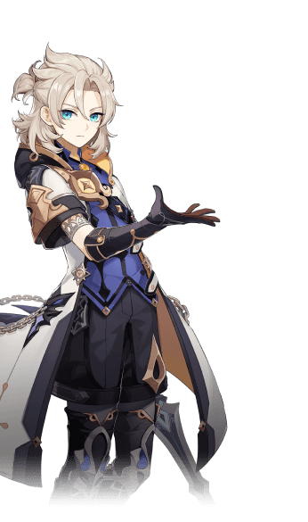
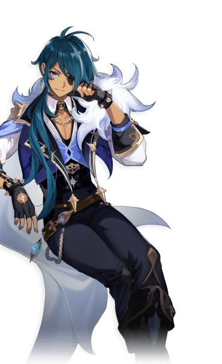

CHARACTERS

Sucrose
An alchemist with an insatiable curiosity towards the world and everything in it. Attached to the
Knights of Favonius as an assistant to Albedo, her area of focus is "bio-alchemy”.


Albedo
The mysterious Albedo is the Chief Alchemist and Captain of the Investigation Team of the Knights of
Favonius through a recommendation from the adventurer Alice, with Sucrose as his assistant.
Rosaria
Rosaria, a sister in Mondstadt's Church of Favonius.
A sister of the church, though you wouldn't know it if it weren't for her attire. An unusual woman
with sharp, piercing words and a cold manner.

Kaeya
In the Knights of Favonius, Kaeya is the most trusted aide for the Acting Grand Master Jean. You can
always count on him to solve any intractable problems. Everyone in Mondstadt loves Kaeya, but no one
knows what secrets this witty, charming knight has...